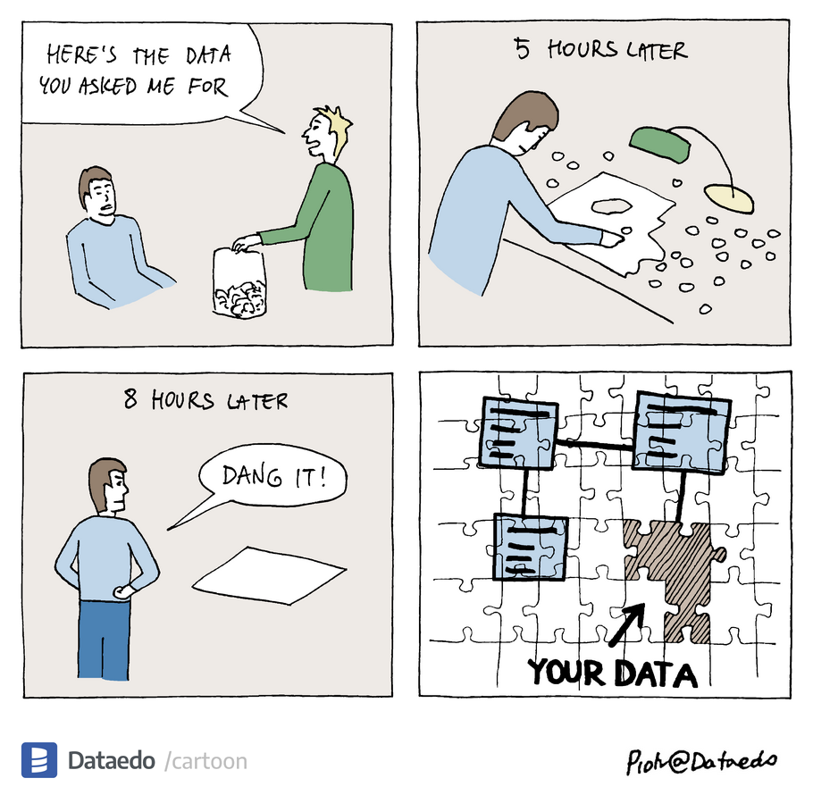

library(tidyverse) # for data wrangling
library(janitor) # for fixing some variable names!
library(naniar) # for visualising and exploring missingness
library(ggmice) # for visualising and exploring missingness
library(mice) # for multiple imputation
# Turn off scientific notation (optional)
options(scipen = 999)Practical materials for Advanced Methods in Behavioural Research, Semester 2 (2025-2026), University of York.
1 Introduction
Learning objectives
As a reminder, the learning objectives for this week are:
- Distinguish between missing data mechanisms and assess their implications for statistical analysis
- Identify and diagnose patterns of missingness in a dataset
- Critically evaluate “traditional” approaches for handling missing data (e.g., deletion, single imputation)
- Explain the principles underlying maximum likelihood approaches for analysing incomplete data
- Apply multiple imputation techniques in analysing incomplete data
In this week’s lecture, we learned about different missing data mechanisms that describe missing values in a dataset, and how different handling approaches might affect statistical inference and power. Many analyses that we’ve considered throughout this module have been able to handle missingness in outcome variables with ease (e.g., mixed effects models) or use full maximum likelihood approaches to address multivariate missingness. This often involved adding or changing a simple argument within the model fitting function—although more advanced approaches might do more to incorporate auxiliary variables.

To complement this, today’s practical will focus on multiple imputation for addressing missingness. We will start with a small example dataset from the mice package for imputation, and then return to the same maternal wellbeing dataset that we used last week.
2 Setting up
2.1 Packages
Today’s practical will use the following packages. You will need to install each one, before loading them at the top of your script. You might also want to turn off scientific notation for readability (optional).
3 Part A: Core example
3.1 Introduction to the dataset
We will start by using the built-in example dataset from the mice package, which is a small sample of data taken from the National Health and Nutrition Examination Survey (NHANES).
# Load the dataset
data("nhanes2")Call str() and summary() on the dataset to inspect its properties. You should see four variables as follows:
- age: age group (20-39; 40-59; 60+)
- bmi: body mass index
- hyp: hypertensive (high blood pressure) (1 = no; 2 = yes)
- chl: total cholesterol level in the blood (mg/dL)
Answer the following questions:
- How many participants are there in total?
- Which variables contain missing data?
- Approximately what proportion of data points do these affect for each one?
For this example, we want to predict cholesterol levels based on BMI and age. Run a simple regression model—ignoring the missing data—and inspect the results. How many participants were excluded?
Show the code
nhanes_cc_mod <- lm(chl ~ bmi + age, data = nhanes2)
summary(nhanes_cc_mod)Let’s dig into the missingness further!
3.2 Missing data diagnostics
One of the easiest ways to get to grips with missing data in a dataset is to visualise it. There are lots of tools available to help you here—though their usefulness often depends on the size and scale of your data. Test out the following functions on your dataset, and see if you can figure out what each one does. Remember you can also call help() on the functions themselves to read the function description and explore available options.
vis_miss()- try the default specification, then also changingcluster = TRUEgg_miss_var()md.pattern()or the perhaps more helpfully labelledplot_pattern()mcar_test()plot_corr()- adding the argumentslabel = TRUEmight also be useful, alongsiderotate = TRUEto make the variable labels more readable
Show the code
# Visualise proportion/distribution of missingness on each variable
vis_miss(nhanes2) + theme(plot.margin = unit(c(1, 0, 0, 0), "cm"))
vis_miss(nhanes2, cluster = TRUE) # group observations according to missing data pattern
# Inspect proportions of missing data on each variable
gg_miss_var(nhanes2) # doesn't add much here but might with larger datasets
gg_miss_upset(nhanes2)
# Summarise missing data patterns
md.pattern(nhanes2)
plot_pattern(nhanes2)
# Little's MCAR test
mcar_test(nhanes2)
# Inspect correlations between variables - useful for identifying variables for imputation (especially if cannot include all)
## there are many other general functions that do this!
plot_corr(nhanes2)
Tip: Plot margins in vis_miss()
vis_miss() is an excellent missing data visualisation tool, but my current version is struggling to include the variable labels clearly at the top of the plot. The function draws upon ggplot2 plotting tools, and so the best fix I have come up with so far is to play around with the plot margin settings. Try adding + theme(plot.margin = unit(c(1, 0, 0, 0), "cm")) to add an extra cm to the top of your plot and display the labels more clearly.
We might also want to inspect whether missingness on one variable is associated with values on another variable. We can do this using simple bar plots, for example:
# Missingness related to continuous predictor
ggplot(nhanes2, aes(x = is.na(bmi), y = chl)) +
geom_bar(stat = "summary", fun = "mean")# Missingness associated with factor levels
nhanes2 %>%
group_by(is.na(bmi), age) %>%
count() %>%
ggplot(aes(x = `is.na(bmi)`, y = n, fill = age)) +
geom_bar(stat = "identity", position = "fill")The ggmice package has some more functions for exploring, that you might find more/less intuitive to interpret.
3.3 Create imputed datasets
3.3.1 Explore settings
The mice package is the workhorse of your imputation workflow. It has some pretty sensible default settings that we won’t need to change too much for today’s practical, but let’s start by exploring what they are.
We can generate a list of the default imputation methods used for each variable using make.method() function.
# Create method object
nhanes_method <- make.method(nhanes2)
# View method object
nhanes_methodThe “method” component tells us the imputation method used to predict missing values for each variable. We can see that no method is listed for age, because there is no missingness on the age variable to predict. For bmi and chl, predictive mean matching is selected as the default method as it is known to work well in a wide range of scenarios. The variable hyp is binary, so its default method is a logistic regression instead. You can see the different methods and their applicability to different types of variable on this page.
We can also check which variables will be used in the imputation:
# Create predictor matrix
nhanes_pred <- make.predictorMatrix(nhanes2)
# View predictor matrix
nhanes_predThe predictor matrix tells us which variables (columns) will be used to impute each incomplete variable (rows). All variables are used by default, although we might want to change this if we had too many variables or if some were recoded versions of another. There are 0s on the diagonals given that a variable cannot predict itself.
These two steps have shown us the default settings, which we will not change today. However, we could in principle edit either of these things and then provide them as arguments in the mice() function when we run the imputations. I have included these below to show how, but we could easily not specify the methods and predictors in the function and it would use the same defaults.
3.3.2 Create and inspect imputed datasets
Given these defaults seem sensible, let’s proceed to create some imputed datasets. We will generate 10 datasets for the purpose of this demonstration by setting m = 10.
nhanes_imp <- mice(nhanes2,
meth = nhanes_method, # (default anyway)
pred = nhanes_pred, # (default anyway)
m = 10, maxit = 10)The maxit argument specifies the number of iterations to use for each imputation. The default is 5, although it’s typical to use 10-20 to achieve convergence. We can see if convergence has been achieved by inspecting the trace plots afterwards:
plot(nhanes_imp)You want to see that the different lines are intermixed, without any strong trends. If we saw the lines trending upwards or downwards, this might imply either (a) some model misspecification that needs addressing, and/or (b) that we need to increase the number of iterations. Yours should look OK, but you can compare them to the example in Figure 6.8 here for reference.
We can also inspect the distribution of data in the different imputed datasets using the following function:
densityplot(nhanes_imp)The plot shows us each variable separately (i.e., its own panel), with the blue line representing its distribution in the observed data. Each pink line represents the distribution in an imputed dataset, which should ideally show a similar distribution if we have a good imputation model.
3.4 Fit models to imputed data
Now we have our imputed datasets, we can analyse each one with the same regression model we fitted to the complete data. The mice package makes this very easy to do using the with() function. Once you have fit your models, try inspecting a few of the individual results and see how they vary in relation to (a) your complete case model, and (b) each other.
# Fit regression models to the imputed datasets
nhanes_fit <- with(nhanes_imp, lm(chl ~ bmi + age))
# Inspect example results - e.g., here from imputation number 3
summary(nhanes_fit$analyses[[3]])3.5 Pool model results
Finally, we can use the automated pool() function to combine the model results according to Rubin’s rules. This represents your final model output! See how it compares to your complete case analysis.
# Pool the results
nhanes_pooled <- pool(nhanes_fit)
# Print final model
summary(nhanes_pooled)You could also try plotting the two results to inspect the difference (for example, the slope for bmi).
Show the code
# Plot CC and MI regression line for BMI
## Note these are conditional on age (not captured by raw data)
ggplot(nhanes2, aes(x = bmi, y = chl)) +
geom_point() +
geom_abline(intercept = nhanes_cc_mod$coefficients["(Intercept)"],
slope = nhanes_cc_mod$coefficients["bmi"],
colour = "red", linetype = "longdash") +
geom_abline(intercept = nhanes_pooled$pooled$estimate[1],
slope = nhanes_pooled$pooled$estimate[2],
colour = "blue", linetype = "solid") +
theme_classic()
``
Different results from the person next to you?
You might have noticed that your results are different from your peers’. This is because the imputation process involves a degree of stochasticity. Just like last week, we can address this and increase the reproducibility of our analyses by using set.seed() before creating our imputed datasets. Alternatively, you can use the seed argument within the mice function itself. If estimates are very different, we should increase the number of imputations so that the estimates are more stable.
Take a break!
If you haven’t already taken a break today, we suggest you do so before you start the next section.

4 Part B: Apply your knowledge
4.1 Introduction to the dataset
For simplicity, we’ll use the same dataset that we used last week. This was a dataset from Dr Catherine Preston’s lab looking at the association between bodily experiences and wellbeing in pregnancy. Now we have tools for dealing with missing data, let’s keep all of the variables in the dataset and create the body dissatisfaction score as we did before. We’ll load just one of the data files so that we can focus on within-dataset missingness rather than file-matching missingness.
# Load and combine data files
bumps_dat <- read_csv("https://osf.io/fzn7p/?action=download") %>%
# Create total body dissatisfaction score from the three BUMPS subscales
mutate(body_diss = `BUMPs Physical` + `BUMPs Weight` + `BUMPs Appearance`) %>%
select(-c(`BUMPs Physical`, `BUMPs Weight`, `BUMPs Appearance`)) %>%
# Fix spacing issues with variable names
clean_names()4.2 Missing data diagnostics
Use the tools from above to explore missingness in the dataset. You will want to:
Inspect the proportion of missingness in each variable
Consider different missing data patterns and their frequency - how many different patterns are there? Which are most frequent?
Use Little’s MCAR test to assess evidence for the data being MAR/MNAR vs MCAR
We will use three key variables in our analysis:
body_diss(for which there is no missingness),maiap_pre_trustanddepression(for which there are missing values). For each ofmaiap_pre_trustanddepression, evaluate:- What variables correlate with missingness on this variable? Hint: You might want to create a bespoke variable to representing missingness on this variable (using
is.na()), and inspect it’s relationship with other variables in the dataset. - What variables would be useful predictors of missing values?
- What variables correlate with missingness on this variable? Hint: You might want to create a bespoke variable to representing missingness on this variable (using
Show the code
# Proportion missingness
vis_miss(bumps_dat, cluster = TRUE) +
theme(plot.margin = unit(c(2, 1, 0, 0), "cm"))
gg_miss_var(bumps_dat)
# Missing data patterns
plot_pattern(bumps_dat, rotate = TRUE)
# Little's MCAR test
mcar_test(bumps_dat)
# Predictors of MAIAP missingness ################
bumps_dat %>%
mutate(miss_maiap = is.na(maiap_pre_trust)) %>%
plot_corr(., label = TRUE, rotate = TRUE)
ggplot(bumps_dat, aes(x = is.na(maiap_pre_trust), y = bond_hostility)) +
geom_bar(stat = "summary", fun = "mean")
# Inspect correlations
plot_corr(bumps_dat, label = TRUE, rotate = TRUE)
# best predictors look to be body dissatisfaction, MAIAP post-trust, anxiety, pbd
# Predictors of depression missingness ###############
bumps_dat %>%
mutate(miss_dep = is.na(depression)) %>%
plot_corr(., label = TRUE, rotate = TRUE)
ggplot(bumps_dat, aes(x = is.na(depression), y = bf_experience)) +
geom_bar(stat = "summary", fun = "mean")
ggplot(bumps_dat, aes(x = is.na(depression), y = pbd)) +
geom_bar(stat = "summary", fun = "mean")
# Inspect correlations
plot_corr(bumps_dat, label = TRUE, rotate = TRUE)
# best predictors look to be pbd, anxiety, maiap_post_trust, bond quality4.3 Create imputed datasets
Generate your imputed datasets using all of the available variables, including the following steps:
Calculate the percentage of cases that have some missing data in the original data, and use this figure as a starting point for how many imputations (m) to run.
10 iterations should be sufficient, but you could increase to 20 if the trace plots show a trend. Note that with larger numbers of variables, you will need to click the arrows in the plot window to see plots for different sets of variables (6 per page).
Inspect the density plots for your datasets.
Show the code
# Inspect defaults
make.method(bumps_dat)
make.predictorMatrix(bumps_dat) %>% view() # easier to inspect in viewer
# Proportion of data with missingness
mean(!complete.cases(bumps_dat))
bumps_imp <- mice(bumps_dat, m = 51, maxit = 10)
# Inspect the imputations
plot(bumps_imp)Show the code
densityplot(bumps_imp)4.4 Fit and pool model results
We will predict depression from body dissatisfaction as we did last week. However, let’s also now also include the body trusting measure from the interoceptive awareness scale (MAIAP) as a predictor.
Run a complete case regression model for comparison. Note how many participants are excluded from the analysis.
Fit the regression model to the imputed datasets.
Pool the model results.
Compare the results from the complete case and pooled analysis.
Create plots if desired to show the model results.
Show the code
# Complete case model
bumps_cc_mod <- lm(depression ~ body_diss + maiap_pre_trust, data = bumps_dat)
summary(bumps_cc_mod)
# Fit regression models to the imputed datasets
bumps_fit <- with(bumps_imp, lm(depression ~ body_diss + maiap_pre_trust))
# Pool the results
bumps_pooled <- pool(bumps_fit)
# Print final model
summary(bumps_pooled)
# Plot CC and MI regression line for body dissatisfaction
ggplot(bumps_dat, aes(x = body_diss, y = depression)) +
geom_point() +
geom_abline(intercept = bumps_cc_mod$coefficients["(Intercept)"],
slope = bumps_cc_mod$coefficients["body_diss"],
colour = "red", linetype = "longdash") +
geom_abline(intercept = bumps_pooled$pooled$estimate[1],
slope = bumps_pooled$pooled$estimate[2],
colour = "blue", linetype = "solid") +
theme_classic()In the lecture, we discussed that one recommendation for how many imputations to run was to check the precision: the fraction of missing information (FMI) / number of imputations (m). We can ask the mice package to provide us with these components in the model summary by specifying type = "all". We can then use tidyverse tools to give us the precision ratio as follows:
summary(bumps_pooled, type = "all") %>%
mutate(precision = fmi/m)If the values for each of your parameters is <.01, then the number of imputations is sufficient. If not, then it would be advisable to increase the number of imputations in your analysis until this threshold is met.
5 Part C: Challenge yourself!
In the dataset, body trusting was measured at two different time points. What if we wanted to include an average of these scores as a predictor rather than just one?
This poses a slight challenge from an imputation perspective: we need the averaged score to be in the imputation model as it will be in our analytic model. However, there are different patterns of missingness in the two variables, so we want to make sure that we are using all the information available (rather than having missing average scores for participants that have partial data available).
Follow the instructions for Passive imputation from the van Buuren textbook to create the composite score on-the-fly within the imputation process. You will need to:
Create the composite variable in your dataset
Create a methods template for imputation, and edit the imputation method for your new composite score.
Create a predictor matrix for imputation, and edit it so that your new composite score is not used to predict the individual scores.
Specify your method and predictor templates in generating your imputed datasets.
Analyse and pool as normal, using your new composite MAIAP trust score rather than the original pre score that we used.
Show the code
# Create average score with existing data
bumps_dat <- bumps_dat %>%
mutate(maiap_trust_av = (maiap_pre_trust + maiap_post_trust)/2)
# Create method matrix for imputation
bumps_meth <- make.method(bumps_dat)
# Edit imputation method for the composite score to reflect the above
bumps_meth["maiap_trust_av"] <- "~I((maiap_pre_trust + maiap_post_trust)/2)"
bumps_meth # check
# Create predictor matrix for imputation
bumps_pred <- make.predictorMatrix(bumps_dat)
# Specify that the average score is not used to predict the sum scores
bumps_pred[c("maiap_pre_trust", "maiap_post_trust"), "maiap_trust_av"] <- 0
bumps_pred
# Create imputations
bumps_imp2 <- mice(bumps_dat, meth = bumps_meth, pred = bumps_pred, m = 51, maxit = 10)
plot(bumps_imp2)
densityplot(bumps_imp2)
# Analyse and pool
bumps_fit2 <- with(bumps_imp2, lm(depression ~ body_diss + maiap_trust_av))
# Pool the results
bumps_pooled2 <- pool(bumps_fit2)
# Print final model
summary(bumps_pooled2)6 Summary
6.1 Recap
In this practical, we’ve explored some ways of documenting and diagnosing missing data in a dataset. We focused on implementing multiple imputation methods that are advantageous in (a) incorporating uncertainty over missing values; (b) incorporating uncertainty over missing parameters as a result of those missing values; and (c) the ready implementation of auxiliary variables to increase the likelihood that the data meet MAR assumptions. This makes multiple imputation an excellent choice in a wide range of statistical scenarios, alongside FIML which we saw could be easily implemented in latent variable models earlier in the module.
6.2 Further learning
The core and suggested reading can be found on the reading list as usual. You can consolidate your knowledge via this Quantitude podcast with Craig Enders as a special guest.
There are two DataCamp courses that specialise in missing data in R if you are interested in building your expertise in this area:
- Dealing with Missing Data in R - this looks to be a introductory level course useful for consolidating your understanding of missing data mechanisms and exploring tools to visualise and understand missingness in your data.
- Handling Missing Data with Imputations in R - this course builds to more advanced imputation methods, including multiple imputation using the mice package. It will also introduce you to some other techniques for imputation that we have not covered in this module.
Finally, if you ever find yourself needing to use multiple imputation in R, the go-to resource is this freely available textbook on Flexible Imputation of Missing Data by Stef van Buuren, the developer of the MICE algorithm and co-developer of the package in R.
Feedback!
These practical sessions are new this year. Please take a moment to rate the difficulty and length of these practical activities via this survey, and let us know of any issues you encountered or aspects you didn’t understand (positive feedback is also welcome!). You will need to be logged in with your university account to respond, but your submission will be anonymous.
For more general questions about the practical, please post them on the VLE Discussion Board.